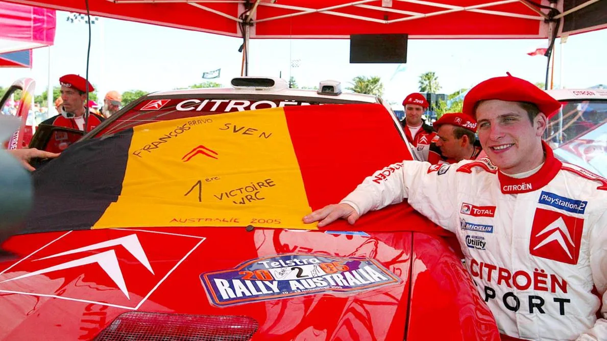
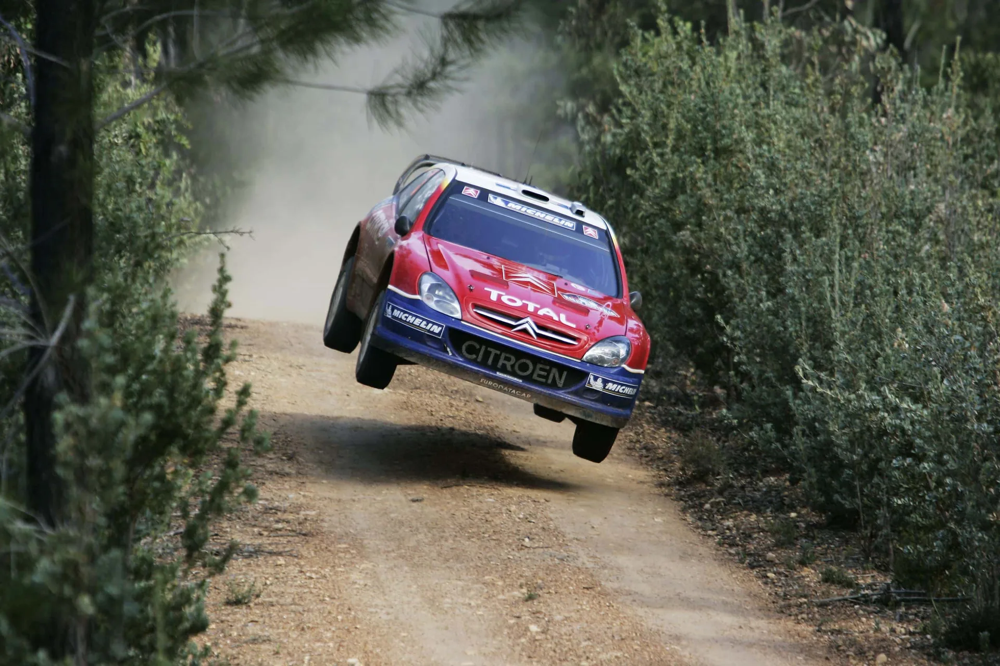
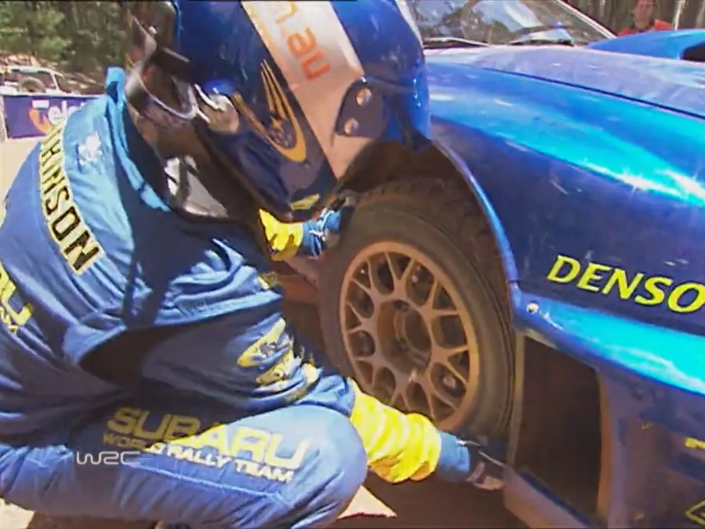
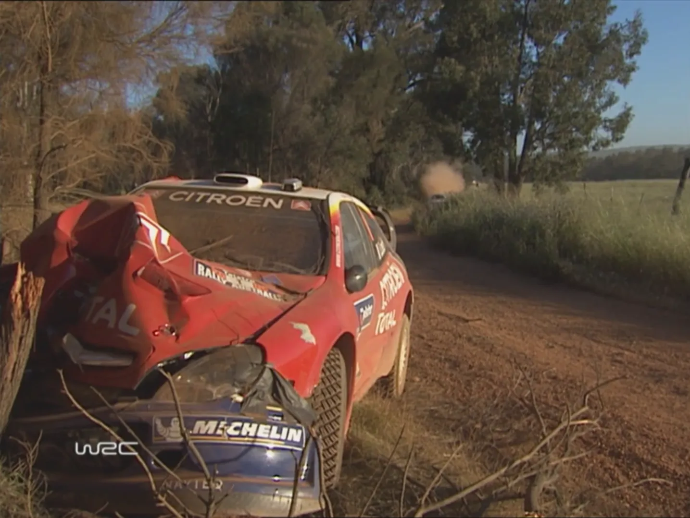
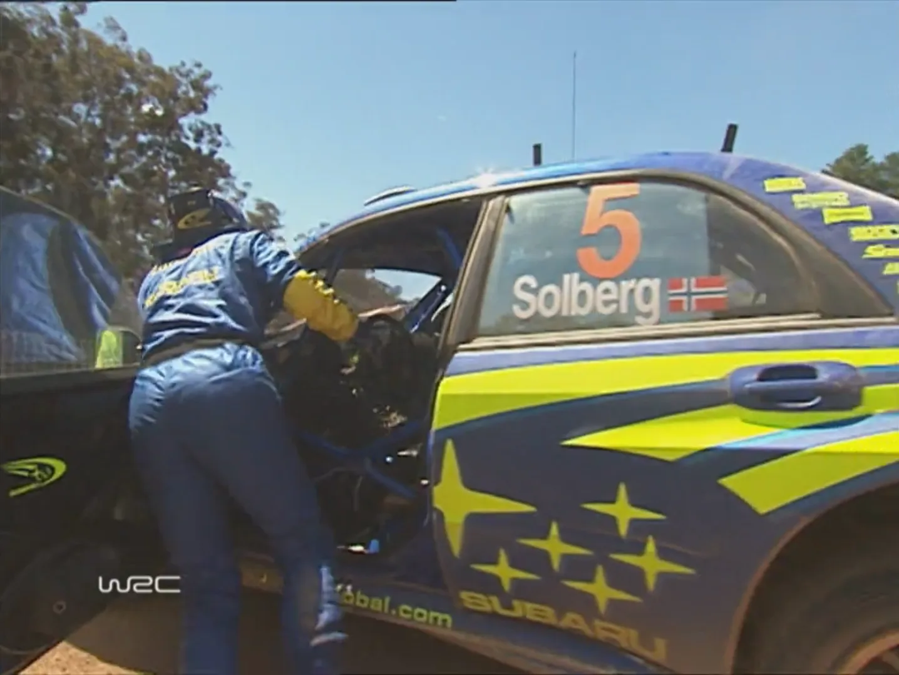
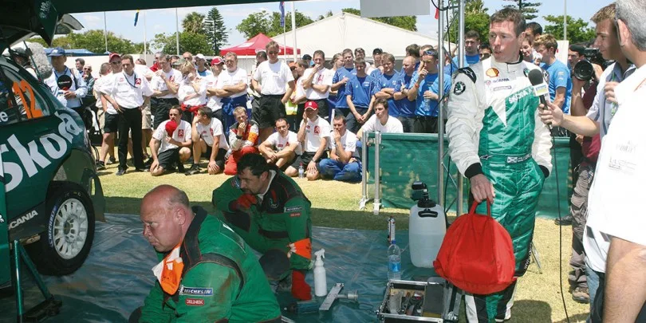
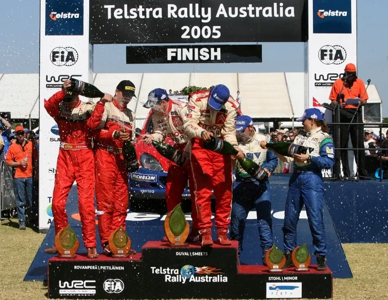
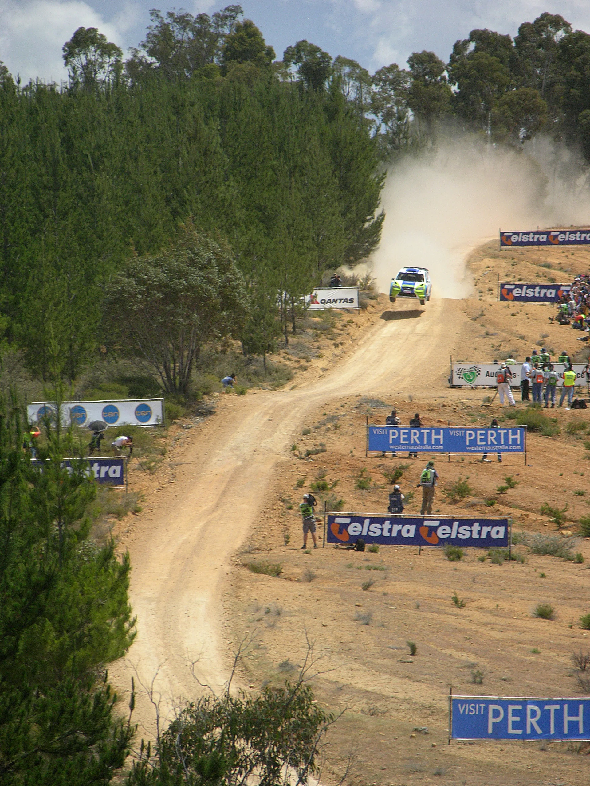

Rally Australia 2005: One of the Craziest Rallies Ever
On this day 21 years ago, François Duval secured his maiden WRC victory at Rally Australia. For some, that is enough to class this rally as the best ever in the history of the series. Jokes aside, the story of the 2005 WRC season finale deserves to be told. Rally Australia was about far more than just the carnage, marking the end of several storylines while featuring plenty of lesser-known moments and behind-the-scenes tidbits throughout the week. So let's dive in!
Events leading up to the rally
The 2005 WRC season was dominated by Sébastien Loeb. The Frenchman, fresh off his maiden title in 2004, won ten rallies en route to his second title, the most any driver had had in a single season at that time. Despite his dominance, Citroën only clinched their third consecutive Manufacturers' Title on the penultimate round in Catalunya, largely due to Duval's difficult start to the season. Citroën's new recruit only managed one top-8 finish on the first six rallies of the season, wrecking quite a few Xsara's in the process. Following burning down his Xsara in Cyprus, the French manufacturer would bench the Belgian for the rounds in Turkey and Acropolis in favour of Carlos Sainz. Duval would return to the team after Greece, scoring points in all but one rally until the end of the season.
Elsewhere, 2005 would prove to be a swan-song for a great deal of manufacturers in the sport's top level. Peugeot announced that they would be leaving the sport shortly before Rally Australia, with Citroën also taking a one-year sabbatical for 2006. It wasn't known at the time, but Mitsubishi and Škoda were also competing in their final event in Australia, with both departures being announced in December. Mitsubishi's one was especially shocking, with the Japanese manufacturer having drivers in contract for the 2006 season, while also having spoken to Colin McRae for a partial campaign.

Heading to Australia, Daniel Carlsson was back in Peugeot's second 307 WRC following the final two tarmac rounds of the season, with Colin McRae also returning to Škoda for a second outing, following a 7th place in Wales Rally GB. Elsewhere, Ford opted to debut their Focus RS WRC '06 early, as preparation for the 2006 season. Toni Gardemeister and Roman Kresta would be driving the new car, with the team continuing to run the '04 car for privateers Dani Solà and Antony Warmbold. Manfred Stohl would also make the trip down under, in his privateer Xsara.
The two major talking points on the sporting side, where the battle for second place in the championship between Petter Solberg and Marcus Grönholm, and Citroën having the chance to beat Lancia's record for most wins in a single season.
The Start of the Rally
Petter Solberg continued from where he left off in Shakedown, leading the rally following the two runs of the Perth City Super Special on Thursday evening. But when the rally-proper kicked off on Friday, it was the Norwegian's teammate, Chris Atkinson, who was setting the pace. The Australian made the most of his local knowledge and his late road position, to lead a WRC event for the second time in his career, after Rally Japan earlier in the season. Unfortunately, Atkinson's lead would be short-lived, as the Australian would face a broken steering arm on Stage 6, dropping to 13th, after being forced to drive with his steering at 90 degrees for two stages.

His teammate inherited the lead, with the road-sweeping Loeb just behind in 2nd. The Frenchman had passed Marcus Grönholm on the same stage. The Finn would not get a chance to fight for the place, as his suspension would collapse on the following test due to a loose bolt, dropping to 11th. That elevated Colin McRae to 3rd position, after the Scott also passed Citroën's François Duval on SS7. Xevi Pons also faced problems, retiring from the rally after hitting a tree on SS5.
Grönholm wouldn't make it back to service, after failing to fix his suspension on the road section, retiring for the day. A bitter way to end his stint with Peugeot. That would be the end of Peugeot's involvement in the WRC's top-class, as Daniel Carlsson had burnt his 307 WRC to a crisp earlier in the day.
More shake-ups in the afternoon
In the afternoon, Loeb would waste no time, going 7.4s faster than Solberg to grab the lead away of the Norwegian. However on the following stage, Loeb would make an uncharacteristic error, going straight into a tree on a high-speed section, retiring from the rally. This was the Frenchman's first retirement due to a driving error since 2003.
That meant that Solberg was once again in the lead, with Duval passing McRae for 2nd on the super specials that ended the day.

Saturday Drama
The rally would move to the iconic Bannister stages on Saturday. The drama would continue on SS13, as rally leader Petter Solberg would hit a kangaroo and break his radiator! The skippies would also cause a headache to Mitsubishi's Harri Rovanperä, with the Finn thankfully only suffering cosmetic damage to the side of his Evo.
Solberg would be forced to retire, since the impact terminally damaged his engine. That elevated Duval to the lead, with Colin McRae in 2nd, and Rovanperä in 3rd.

Things would calm down slightly in the afternoon, with Duval extending his lead over McRae, who had to switch from his paddle shifter to his stick one, losing some time. The Scott was briefly passed by Rovanperä, before the Finn hit a tree on SS16, dropping back to 3rd. Elsewhere, Gigi Galli and Manfred Stohl were fighting for 4th, with the Austrian eventually coming out on top following a series of mistakes on Stage 18, losing more than 40 seconds. Atkinson would also continue his fightback, winning two stages in the afternoon, climbing to 6th.
Sunday and McRae heartbreak
For Sunday, things seemed to have been decided. Rovanperä passed McRae on the second stage of the day, after the Scot overdrove his Fabia, struggling with the rear of his car. Unfortunately for McRae, worse was yet to come. A routine clutch change would go badly wrong in service, with the Škoda mechanics unable to fit in a new one in time. McRae would retire from third place, after going over the time limit. In service, mechanics from rival teams would applaud their understandably devastated Škoda colleagues for their efforts. Truly one of the most heartbreaking retirements in WRC history.

McRae's misfortune elevated Manfred Stohl to 3rd, with the Austrian looking at a potential second career podium. The Austrian would have to hold off the charging Chris Atkinson, who had finished either first or second in all stages on Sunday. Stohl would manage to secure third place, 6 seconds ahead of the Subaru driver.
None of this mattered to François Duval though. The Belgian won the rally ahead of Harri Rovanperä, giving Citroën the record for most wins by a manufacturer in a single season. This was Belgium's first win in the WRC. Armin Schwarz would also claim a single point on his last rally in the WRC.

The Aftermath
So what is the legacy of this event. Honestly, apart from McRae's heartbreaking retirement, the event is mostly forgotten. The 2005 edition of Rally Australia was the end of an era in more ways than one. It was the last rally of the early World Rally Car era, with the multi-manufacturer time of the championship effectively coming to an end, with four manufacturers withdrawing from the sport. Factory seats would become much harder for drivers to find, and many of that generation would see their career prospects severely damaged as a result. Out of the 12 manufacturer entries in that rally, only four drivers would compete in the series full-time in 2006.
François Duval would have an even worse 2006 season in a privateer Fabia WRC, before finding refuge in Kronos in 2007, impressing with his tarmac pace. His career in the WRC would effectively end following the end of the 2008 season. Harri Rovanperä was left out in the cold following Mitsubishi's withdrawal from the sport. His Red Bull Škoda stint is something that everyone wishes to forget.
Stohl would have a great 2006 season, finishing 4th in a privateer Peugeot 307 WRC, before having a quite bad 2007 campaign. The star of the rally, Chris Atkinson, would never have such good of a chance of winning a rally ever again. The Australian would never truly develop into an "A-tier" driver in the sport, ending his career with six podium finishes. As for McRae, the Scott would compete in one more WRC event, replacing Loeb in Turkey the following year after the Frenchman's shoulder injury. He would unfortunately pass away in 2007.
As for Rally Australia itself, the 2006 edition would be the last to be held in Perth, with the rally moving to Kingscliff for one forgettable edition in 2009, before again relocating to Coffs Harbour for 2011. The country last hosted a WRC event in 2018.
It's a shame, I really liked Perth.

Alex Nordstrom/Wikimedia Commons


Comments